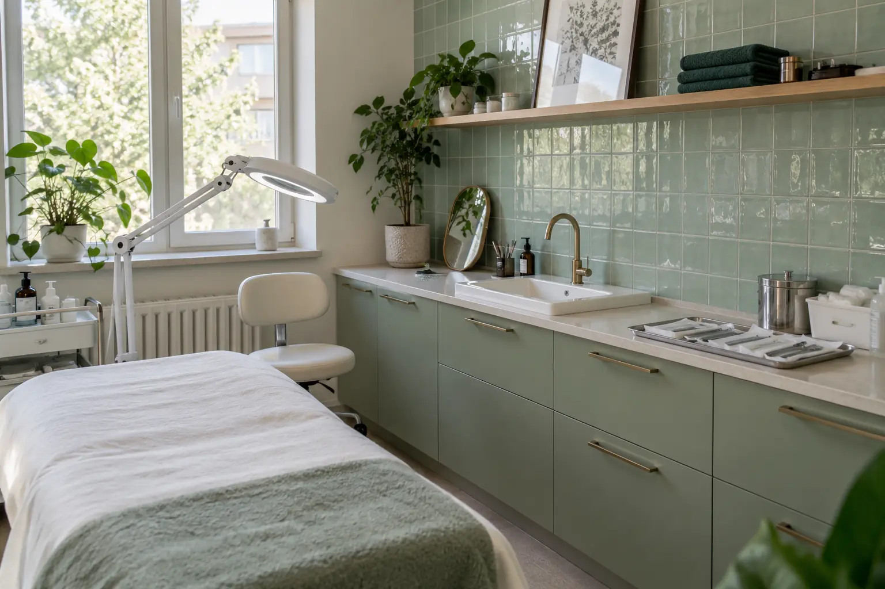

Grožio paslaugų teikėjo patikra: vieta, higiena ir paslaugos pobūdis
Autorius: Madbeauty redakcija · Numatyta 2026 m. lapkričio 20 d. 10:00 (Lietuvos laiku)
Prieš rinkdamiesi grožio paslaugą, sutikrinkite teikėją, faktinę paslaugos vietą ir taikomus dokumentus. Sužinokite, ką galima patikrinti oficialiai ir kur baigiasi tokios patikros ribos.

Patikrinkite tris dalykus: kas teikia paslaugą, kur ji teikiama ir kokiam paslaugos pobūdžiui taikomas leidimas ar licencija. Grožio veiklai aktualus leidimas-higienos pasas konkrečiai veiklai; asmens sveikatos priežiūros paslaugai tikrinamos įstaigos ir specialisto licencijos bei jų apimtis. Įrašas, atsiliepimai ar katalogo profilis savaime nepatvirtina visų šių aplinkybių ar individualaus paslaugos tinkamumo.
Trumpa trijų dalių patikros kortelė
- Kas teikia? Užsirašykite teikėjo ar įstaigos pavadinimą. Jei tai sveikatos priežiūros paslauga, sutikrinkite ir ją atliekantį specialistą, ir įstaigą. VASPVT paaiškina, ką tikrinti.
- Kur teikia? Palyginkite faktinį paslaugos adresą su oficialioje informacijoje nurodyta vieta. NVSC nurodo reikalavimus grožio veiklos patalpoms.
- Kokiai paslaugai taikomas dokumentas? Paprašykite tikslaus paslaugos ir metodo aprašo. Grožio veiklos leidimas turi būti aktualus konkrečiai veiklai; sveikatos paslaugos atveju tikrinama, ar įstaigos ir specialisto licencijų apimtis atitinka paslaugą. NVSC aprašo leidimo-higienos paso patikrą.
Grožio veiklos leidimas ir sveikatos paslaugos licencijos nėra tas pats
NVSC nurodo, kad grožio paslaugų teikėjui reikalingas galiojantis leidimas-higienos pasas konkrečiai veiklai. Šis dokumentas savaime nėra įrodymas, kad teikėjas turi teisę atlikti bet kokią sveikatos priežiūros paslaugą. NVSC paaiškina grožio ir sveikatos paslaugų skirtį. Jei meniu pavadinimas neatskleidžia, kokia paslauga ar metodas siūlomas, paprašykite tikslaus aprašo. Nepriskirkite paslaugos kategorijai vien pagal rinkodaros pavadinimą.
Sveikatos paslaugos atveju VASPVT rekomenduoja tikrinti ir įstaigos, ir specialisto licenciją, jų apimtį bei paslaugos teikimo vietą. Mokymų pažymėjimas nepakeičia reikalingos licencijos. VASPVT patikros paaiškinimas padeda suprasti dokumentų apimtį, tačiau registras nenustato, ar konkreti paslauga jums asmeniškai tinkama.
Jei informacija nesutampa
Prieš registruodamiesi paprašykite teikėjo patikslinti paslaugos aprašą, adresą ar dokumento apimtį. Jei kyla abejonių dėl grožio veiklos reikalavimų, kreipkitės į NVSC; dėl sveikatos paslaugos licencijų – į VASPVT. Patikros kortelė nėra Madbeauty teikėjų patikros pažadas: ji skirta palyginti oficialią informaciją su konkrečiu pasiūlymu.
Jei suteikta paslauga nesutampa su pasiūlymu, išsaugokite aprašą, susirašinėjimą ir mokėjimo informaciją. VVTAT rekomenduoja pirmiausia raštu kreiptis į paslaugos teikėją su reikalavimu. VVTAT nurodyta 14 dienų tvarka taikoma pagal šaltinyje aprašytas sąlygas, o ne kaip universali avanso ar pinigų grąžinimo taisyklė.
Kai turite konkretų pasiūlymą, registracijos gidas padės sutikrinti paslaugą, laiką, vietą ir patvirtinimą.
Šaltiniai
- VVTAT · grožio paslaugos ir ginčai · vvtat.lrv.lt
- NVSC · teikėjo pasirinkimas ir instrukcijos · nvsc.lrv.lt
- NVSC · grožio paslaugų sauga, 2026-09-17 · nvsc.lrv.lt
- NVSC · grožio veiklos apimtis · nvsc.lrv.lt
- NVSC · grožio ir sveikatos paslaugų riba · nvsc.lrv.lt
- VASPVT · sveikatos paslaugų teisėtumo patikra · vaspvt.lrv.lt